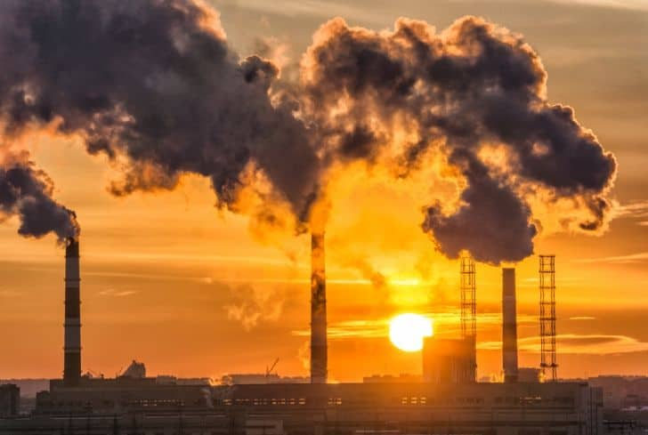

Highlighting the importance of environmental awareness and the need for collective action to protect our planet.
Why is Environmental Awareness Important?
Environmental awareness is crucial for the preservation of our planet. It helps us understand the impact of our actions on the environment and encourages us to make sustainable choices. By raising awareness, we can inspire individuals and communities to take action towards a healthier planet.
Environmental awareness is the understanding of the fragility of our environment and the importance of its protection. It involves recognizing the impact of human activities on the planet and taking steps to mitigate that impact. By promoting environmental awareness, we can encourage individuals and communities to adopt sustainable practices, reduce waste, and protect natural resources. This collective effort is essential for ensuring a healthy planet for future generations.

Pollution is the introduction of harmful substances or products into the environment, causing adverse effects on ecosystems and human health. It can take various forms, including air, water, and soil pollution, and is often a result of industrial activities, waste disposal, and transportation. Reducing pollution is essential for protecting the environment and ensuring a sustainable future.

Overpopulation refers to a situation where the number of people exceeds the capacity of the environment to support them. This can lead to resource depletion, environmental degradation, and increased competition for limited resources. Addressing overpopulation